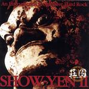

| Artist: | Show-Yen |
| Title: | II |
| Label: | Poseidon/Musea PRF-024/FGBG 4586.AR |
| Length(s): | 53 minutes |
| Year(s) of release: | 2005 |
| Month of review: | [05/2006] |
| 1) | Sakura I | 1.15 |
| 2) | Life Game | 5.15 |
| 3) | Ceremony For The Evil | 5.22 |
| 4) | The Moon Knows Everything | 6.39 |
| 5) | Insanity | 4.17 |
| 6) | Sakura II | 1.26 |
| 7) | Quappa | 3.58 |
| 8) | Kirin | 3.58 |
| 9) | A Thorny Path | 4.48 |
| 10) | Sakura III | 1.31 |
| 11) | The Power Of The Earth | 8.25 |
| 12) | Sakura IV | 1.38 |
| 13) | (I Can) Rock 'n' Roll Again | 4.56 |
Although I tend to think at times that Show-Yen is more guitar hero than progrock territory, Ceremony For The Evil for instance shows a great versatility and also a strong compositional approach. Now, I may not be that fond of the pounding english folkrock (a very frolic melody), but before that, the 'vocals on guitar' works very well indeed. Thus they alternate pretty heavy material with quite a bit of frolic, circus like material. In the finale they somewhat overdo it, I think.
The Moon Knows Everything is a slow plodding piece with sharp guitar work. The rhythm guitar work sounds a bit Kashmir like even, and the lead guitar meanders. The band also tends quite a bit of tension to their music, which I think is necessary to keep it interesting.
Insanity is a wayward stop-and-start tune, with a typical meandering guitar solo, and again plenty of drive. The band knows how to rock, and if keep on bringing in these special variations and build tension, they avoid the trap of selfsimilarity.
Sakura II is the second of short interludes. This one sounds very open and soothing, with a strong atmosphere dominating role for the bass player. With Quappa we seem to move more into jazzrock territory, although the continuation is rather straightforward rock at first. Fortunately, we then come again to one of those 'dancing' guitar parts. In the middle, the guitar solo is sharp and thoughtful.
Kirin is a pacey opener, a bit in the style of Steve Morse. There is something very American about it. This one is maybe a bit too tuneful for me. I mean, it is played flashy enough, but the blues leanings are a bit too strong, and it is simply a bit too straightforward. The bass player also gets to do a solo. Something that will do well at live gigs. A Thorny Path has acoustic guitar, is strongly in the most mellow of Gary Moore songs. Blues with a feeling, but way too sugary for my tastes.
Sakura III is a light classical guitar piece before we come to the longest track on the album, The Power Of The Earth. There is some time for some Crimsonesque relaxed repetitive guitar lines too, and a powerful finale, but I expected a bit more of this. Sakura IV is like A Thorny Path too sweetly melodic.
(I Can) Rock 'n' Roll Again is a straightforward energetic rocker.